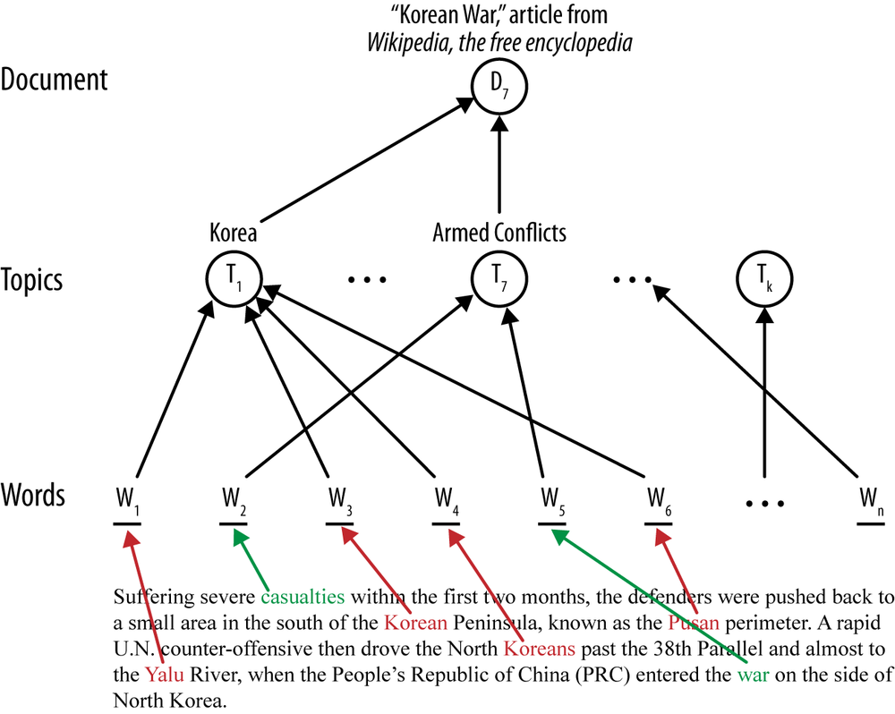
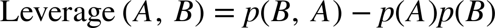

Unedited course transcription
Original BAIM notes and figures
The supplied notes are preserved here as an audit trail. Formatting and equations are rendered for readability; the original Markdown remains available to download. Study the corrected explanations in the main chapters.
Download the original Markdown notes. All 40 source figures are stored locally. Main chapters provide the accessible conceptual explanations and worked calculations.
Complete source text and images
BAIM 4200: Business Analytics 2
Chapter 1
Data Science: Set of fundamental principles that guide the extraction of knowledge from data ****
Data mining: the extraction of knowledge from data via technologies that incorporate these principles
- data science is more broad
- data mining techniches are some of the clearest uses of the principles of data science
churn: Metric representing customer defection and the loss of a client to a competitor.
- customers switching over from one company to another
Data-driven decision-making (DDD): Practice of basing decisions on the analysis of data, rather than purely intuition
- increase in productivity
- higher return on assets, equity, asset utilization and market value → causal relationship
2 types of decisions
- decisions for which “discoveries” need to be made within data
- decisions that repeat, especially at massive scale
- big data technologies are associated with productivity
data and the capability to extract useful knowledge from data should be regarded as a key strategic asset
- these assets are complementary → need quality data AND a good data science tea m
data is an asset → quality data acquirement can be at a cost

Data Mining
in the early stages of data mining, we must decide whether to use a supervised or unsupervised method and if supervised we must produce a precise definition of a target variable
Cross Industry Standard Process for Data Mining (CRISP-DM)

- the key to sucess tends to be accurately framing the business problem as a data science problem, and accurately mapping the real issue to a more tanglible data based one
- being able to narrw down from the business train of though to actually find what exact problem to solve, and the use scenario.
- Data understanding is imperative, it is important to understand the strength and limitation of data
- Data often lacks perfect fit to what we are trying to find, data can be expensive to acquire, contain mistakes, and some require working to collect it from scratch, which involves a whole project of its own
- Data preparation involves fitting the raw data to parameters that our models might use
- converting data to different types, removing or inferring missing values or converting it to different formats is required
- numeric values might need to be normalized or scaled to make them comparable
- Modeling is the primary place where data mining techniques are applied to the data
- Evaluation is a rigorous step in which the data mining results are assessed to gain confidence in the values and have confidence the model works as intended
- Evaluation also serves to help ensure that the model actually satisfies the original business goals
- Evaluation in the actual business context helps test the model, many models that work perfectly, once applied to real life data, start failing or throwing false alarms
- Deployment involves putting the results of data mining and the techniques to real use to realize some return on the investment.
- Deployment tends to involve a predictive model in some busienss process
Implications for Managing a Data Science team
It tends to be a mistake to view data mining as a software or engineering project. Data mining tends to be an exploratory endevour closer to research and development than software engineering.
Other Analytics Techniques
Statistics
- summary statistics Calculating specific values like sums, means, and medians
- Mean can be misleading in skewed distributions, use median instead
- Hypothesis testing Used to determine if a pattern is a real regularity or just random chance
- Uncertainty Uses confidence intervals to quantify how sure we are of a result
- Relation to Data Mining Data mining generates hypotheses, which Statistics can test
Database Querying
- A specific request for a subset of data
- There is no discovery of patterns, simply querying data we know exists
OLAP (On line Analytical Processing)
- GUI based tool for manually ‘drilling down’ into data in real time
- Dimensions are pre-programmed
- Facilitates manual/visula exploration but does not perform automatic modeling
- no predictive modeling or pattern recognition algorithms
Data Warehousing ****
- A centralized repository that collects and “coalesces” data from accross an entire enterprise
- A facilitating technology, making data more easily available for mining
Regression Analysis
- Explanatory - Why did this happen ?
- Predictive Can we predict what will happen with new data ?
Machine Learning
- Subfield of AI
- Differences from Data Mining
- ML includes things like robotics and computer vision
- KDD(Data Mining) is more focused on the entire process: data prep, business applications, and evaluating results
Chapter 2 Business Problems and Data Science Solutions
Classification and class probability estimation attempt to predict, for each individual in a population, which of a set of classes this individual belongs to (tend to be small number of sets)
- Classification the model more so determines which class the individual belongs to:
- ex: →survey→ categorize customers into ‘will respond’ and ‘won’t respond’ sets
- Scoring or Class probability estimation: Produces a model that, given an individual, determines a score representing the probability that the individual belongs to each class
- Classification the model more so determines which class the individual belongs to:
Regression(value estimation) attempts to estimate or predict, for each individual, the numeric value of some variable for that individual
- ex: “how much will a customer use the service?”→ variable = service usage
Similarity Matching attempts to identify similar individuals based on data known about them
tends to be a popular method for making product recommendations
→ finding people with similar purchasing patterns
Clustering attempts to group individuals in a population together by similarities
- usually not for a specic purpose →observing natural groups forming in people
Co-occurence grouping (also known as frequent itemset mining, association rule discovery, market-basket analysis) attempts to find associations between entities based on transactions involving them
- ex: “What items are commonly purchased together?” - different than clustering since these often appear physically together in the data (whereas clustering tends to be natural patterns forming)
Profiling(behavior description) attems to characterize the typical behavior of an individual, group, or population
ex: “What is the typical cell phone usage of this customer segment?”
often used to establish behavioral norms for anomaly detection
→ credit card fraud detection by unusual purchasing patterns
Link Prediction attempts to predict connections between data items, suggesting a link should exist, and possibly estimating the strength of the link
- based on movies you’ve watched → here are new recommendations
- tends to use graph based algorithms
Data reduction attempts to take a large set of data and replace it with a smaller set of data, containing much of the important information in the larger set
- attempt to maintain data quality, and possible findings
- easier to deal with, less noise - tradeoff with loss of information
Causal modeling attempts to help us understand what events or actions actually influence others
- tries to determine wether a relationship was purely correlational or wether there was true causation by comparing what happened to a counterfactual scenario where the treatment did not occur
Supervised vs Unsupervised Methods
Unsupervised →”Do our customers naturally fall into different groups?”
- no specific target behind the question
Supervised → “Can we find groups of customers who have particularly high likelihoods of canceling their service soon after their contracts expire?”
- specifc target we address with the question → will a customer leave ?
- there must be explicitly data on the target
Classification, regression and causal modeling generaly are solved with supervised methods.
Similarity matching, link prediction, and data reduction could be either.
Chapter 3 Introduction to Predictive Modeling: From Correlation to Supervised Segmentation
supervised segmentation - How can we segment the population into groups that differ from each other with respect to some quantity of interest
- fundamental idea of data mining → finding important informative variables (attributes) of the entities described by the data
information is a quantity that reduces uncertainty about something
- a predictive model is a formula for estimating the unknown value of interest → the target
- a descriptive model does not estimatea value but gains insight into the underlying process
- would tell us what something looks like or how variables in a system correlate or work together
an instance(row in table) is sometimes called a feature vector
induction →process of learning general patterns or rules from observed data and using them to make predictions or decisions on new, unseen cases
training data is the input data for the induction algorithm used for inducing (training) the model
How do we select important attributes ?
how do we segment instances into resulting groups based on the target variable in the most pure way → most homogenous with respect to the target variable
- if every member of a set has the same value for the target →pure group
- realistically pure groups are unlikely → we can still attempt to reduce impurity substantially
Information Gain is the most common criterion; It measures the reduction in entropy (impurity) after splitting on an attribute
Entropy quantifies class uncertainty; a good split produces subsets with lower entropy (more homogenous classes)
- the attribute with the highest information gain is one that causes the best split (best information gain)
**log here is base 2
where

tells us how impure one individual subset is
we also need to know however, how informative an attribute is with respect to our target…
information gain measures the change in entropy due to any amount of new information being added
work through → given an attribute K in our data, K can take on N different values, we can split the set of data into N number of children sets, based on the value K takes on, the larger the drop in entropy from the starting parent set to the subsets, the more information gain attribute K gives us
where
notice the entropy for each child is weighted by the proportion of instances belonging to that child
notice P(.) is different for IG vs entropy
So far everything above works for classification of discrete, categorical variable problems, but what if its not discrete objects but numeric ?
for regression problems with a numeric target variable, information gain is not the right measure, because entropy based information gain is based on the distribution of properties, we want a measure of the purity of the numeric target values themselves.
A natural measure of impurity for numeric values → variance
- if the set has all the same values for the numeric variable then the set is pure and variance = 0
- if the numeric target values are very different then there is high variance ****
we can observe, similarly to information gain, the reduction in variance from parent to child sets
tree structured classification models
- predict a categorical target by recursively splitting the data based on attribute values, at each nod the model chooses the attribute that best separates the classes, typically using measures like entropy and information gain
- recursively continues until subsets are sufficiently pure or stopping criteria are met
- trees can then be used for predictions bby following the path from the root to the lead

probability estimation
- instead of predicting a discrete value x or y, we would like to predict the probability of something being x or y
if a leaf of a tree contains n positive instances and m negative instances, the probabillity of any new instance being positive may be estimted as
p =
this however, can cause problems in small datasets
- in an extreme case, one leaf could contain just one instance, meaning it would tell us there is 100% probability that future members that follow this segment of the tree will have the same class as this one instance
- overfitting problem → weighing too much on training data that is not reflective of the complete real world cases
for tree based probability estimation, instead of simply computing the frequency we can smooth out the version of the frequency based estimate → Laplace correction (moderates the influence of leaves with only a few instances)
binary class probability estimation becomes
n = number of examples in leaf belonging to class c
m is the number of examples not belonging to class c
this estimation essentially gives us an uncertainity padding used for small datasamples
- it could reduce a 1.00 probability to a 0.75 probability to account for small data
observe that, as the dataset grows and consecutively n and m , the correction becomes less and less making a more confident estimate
Chapter 4 Fitting a Model to Data
Parametric modeling: A modeling approach where a specific mathematical equation or structure leaving certain numerical values undecided
Parameter Learning: The process of tuning the undecided numerical values using training data so that the resulting model fits the actual data as accurately as possible.
entropy gives us a way of measuring for homogeneity so we can define group boundaries
- this helps us create regions of homogeneity to help predict the target variable of a new unseen instance
- we can separate instances (of binary value in this case) with a linear classifier
linear discriminant function


linear discriminant discriminates between the classes, and the function of the decision boundary is a linear combination - weighted sum- of the attributes
just how trees are a classifier for a specifc set of rules, a linear discriminant function is a numeric classification model
general linear model
a parametrized model where the weights of the linear function are the parameters
weights can be loosely interpreted as importance indicators of the features, with the larger the magnitude of a feature’s weight, the more important that feature is for classifying the target (assuming all features have been normalized to the same range)
In many cases, we often dont have a single line that best fits the data, rather hundreds or infinite possible lines so how do we pick?
define an objective in choosing parameters, what weights should we choose ?
define an objective function that represents our goal and can be calculated for a particular set of weights and a particular set of data, then we find the optimal values for weights by maximizing or minimizing the objective function
creating an objective function that matches the exact goal is usually impossible
possible solutions → support vector machines ,different types of regression
most useful one → logistic regression
we can see logistic regression perfectly split the data types
while support vector machine splits the points evenly between groups

Logistic Regression applies linear models to class probability estimation
Support Vector Machines are linear discriminants
- they attempt to fit the widest possible bar between data, and the linear discriminant will be the center line
- the distance between the edges of the bar is known as the margin
- SVM’s objective is to maximize the margin

SVMs attempt maximize margin in expectiations of new instances being plotted in the general areas as training data but we know they will be different
- by maximizing margin, SMVs give the maximal leeway for classifying points and still being on the expected side of the discriminant
- With certain data it is often the chance that a single line can not perfectly separate the data
- to deal with incorrectly classified points, on the objective function in that measures how well a particular model fits the training points, we penalize a training point for being on the ‘wrong’ side of the decision boundary
- The best fit in this case is a balance between a large margin and low total error penalty
- Hinge Loss Points on the wrong side of the line are penalized proportionally to their distance from the margin
Regression via Mathematical Functions
loss a general term for error penalty
loss function determines how much penalty should be assigned to an instance based on the error in the model’s predicted value
- in SVM’s hinge loss only becomes positive when an example is on both the wrong side of the boundary AND beyond the margin
zero-one-loss simply assigns a loss of 0 to correct datapoints and 1 to wrong ones
squared error loss function-
absolute error - The error of a prediction measured as the difference between the predicted and actual target vaue
- We could minimize the sum or mean of the absolute errors across training data to improve a model
least squares regression - Standard way linear regression models measure error - Minimizes the sum or mean of the squares of the errors
- very sensitive to data, incorrect or outlying data points can severly skew the resulting linear function
Class Probability Estimation and Logistic ‘Regression’
- A linear discriminant like linear regression or SVMs only tell you on what side of the line, or what group, a new piece of data might fall into, but it doesn’t tell you what the probability is of that happening
- While on linear models, the further a data point is from the line, the higher the odds of it being in that class are, linear models are unbounded
- since probability is measured between 0 and 1, we can’t use linear models (which are unbounded from → ) to map probability, as you can’t fit a line with no bounds within 0 and 1
The odds of an event is the ratio of the probability of it happening vs it not happening
p = 0.5 → odds : 50/50 or 1
p = 0.9 → odds: 90:10 or 9
p = 0.01 → odds 1:99 or 1/99
- by taking the odds we now have probability in terms of odds bounded to 0 →
- if we now take the log of those odds (log-odds), we end up with the probability values now on the range of → , allowing us to fit a linear model to them
- Now this model can be used to predict log odds of new data, which can be easily converted to an understandable probability value
Chapter 5 Overfitting and its avoidance
Generalization The ability of a model to make accurate predictions on unseen (holdout) data
Overfitting is the tendency of data mining procedures to tailer models to the training data, at the expense of generalization to previously unseen data points. The model fails to generalize
A Fitting Graph shows the accuracy of a model as a function of the complexity
Tree models can be overfit to the point of creating a leaf node for every single instance in the training data, fitting it exactly and essentially creating a lookup table for the data, which does not generalize well at all with new data

Linear models can be overfit if we give them too many variables and leeway allowing a line to be overfit exactly to the data while not truly representing the general pattern
In this example, we can see the SVM has a quite accurate representation of the general trend pattern, and adding the new data point (star) causes the Logistic regression to completely ignore the general trend, just to accomodate and fit the new data point

overfitting can cause us to ‘hallucinate’ correlations between variables in our training data that are actually not real or consistent correlations, causing the model to fit our training data perfectly but failing to generalize when applied to unseen data
Cross Validation is a technique used to estimate the generalization performance of a machine learning model by systematically partitioning a dataset into multiple training and testing datasets
- Unlike a single holdout split, cross-validation ensures every data point is used for both training and testing across multiple iterations, providing a more reliable assessment of how a model will perform on unseen data.
k-folds testing

after cross validation we can find the accuracy/performance average for the model and standard deviation
Learning Curves plot the generalization performance against the amount of training data

We can avoid overfitting a tree by examining complexity control in tree induction. As trees grow, they can overfit the data and become too complex, to avoid overfitting we can :
- Stop growing the tree before it gets too complex
- Grow the tree until its too large and then prune it back, to reduce its complexity
We can limit tree sizes by setting a minimum number of instances that must be in a leaf, this prevents overly-specified leaves that only applies to a small subset and won’t generalize well
- This reserves the leaves to only be created for attributes in which we can classify more data and allows the model to be more generalized
Setting a specific number of instances can be good but there is no way to know how many instances we should go with
We can fix this by instead using hypothesis testing at each node,
- at each node we using hypothesis testing, to see if splitting that node would create any relevant amount of information gain or if the information gain is minimal/by chance
- if IG actually improves by a significant amount, we split, else we end that node there
pruning involes replacing a set of leaves or a branch with one leaf, generally, if a set of leaves can be replaced by one single leaf, and not resduce accuracy, then we go ahead and do that, and we can iterate this on the tree until we reach a point where any more simplification would result in reduced accuracy
If we want to compare models we can split the daa into sub-training set, a valiation set, which we can use as tests during modeling, and based on outcomes we can continue to iterate a model, and finally a final test set, to see model performance, but is independent of the modeling process and we dont use it as feedback to change the model
Nested Cross Validation
- Say we perform cross validation with 5 folds, on each fold, we then perform CV on that fold’s training data
- our CV model might need a tuneable complexity parameter C, rather than directly guessing it, we can define a list of standard or guessed C values, and use those for the inner loop of CV, from there we can find which C value leads to best performance, and use that C value for the outer loop
Sequential Forward Selection of features uses a nested holdout to first pick the best individual feature by looking at models built using just one feature. We then add a second feature to the best first one, and then the best pair is selected, the same is done for the remaining features
While for trees we can prune or limit growth, for Regression like models we can avoid overfitting using regularization
Regularization Optimizing some combination of model fit and simplicity that adds a penalty to the objective function that penalizes model complexity.
- our aim is to minimize both total error as well as complexity
| Feature | L2 Regularization (Ridge) | L1 Regularization (Lasso) |
|---|---|---|
| The Math | Sum of the squares of the weights (). | Sum of the absolute values of the weights ($ |
| The Effect | Keeps weights small but rarely zero. | Forces many weights to be exactly zero. |
| The Benefit | Prevents any one feature from dominating. | Acts as Automatic Feature Selection by "turning off" useless variables. |
- Ridge Regression: Linear Regression + L2 Penalty.
- Lasso: Linear Regression + L1 Penalty.
- Support Vector Machines (SVM): Uses a specific fit measure called Hinge Loss + L2 Penalty.
- Regularized Logistic Regression: Uses "Likelihood" + L2 (or L1) Penalty.
target leakage: Variables you use from historic data to train the model won’t actually exist when you apply the model to real life
model leakage: Your test data is too similar to the training data giving a false sense of a good model that fails when applies to truly new data
Chapter 6 Similarity, Neighbors & Clusters
Similarity can be used for doing classification and regression
- amazon & netflix use it for ‘people who watched this also watched …”
represent objects as feature vectors, the closer they are the more similar they are
In the image we use pythagorean theorem to find the euclidean distance between two points
we can extend it to n dimensions


Nearest Neighbor reasoning to find the most similar points
we can predict a new examples target value by mapping it based on attributes estimating it by looking at its nearest neighbors
we can have a sort of combining function operating on neighbors known target values & weights to estimate a new target value

we can have probability estimation for classification by looking at the nearest neighbors and finding the ratio of data in both sides of the classification to get a probability
we can also perform regression in a similar way, taking means of surrounding data points to come up with a predicted target value
how many neighbors do we look at ?
- as we look at more neighbors, the estimates are smoother, however too much and we can just end up averaging the entire dataset or classifying the new point into simply the majority
- we set k nearest neighbors KNN
Neighbors will differ by different amounts based on how similar they are to our new point, so we used weighted systems so each neighbors influence on the outcome is scaled by how similar (close) it is, this lets us worry less about picking a specific k value since distances do the ‘talking’
k is also a complexity parameter, at k=1 we have an incredibly complex model way too overfit, and at k = n (dataset size) we have an over generalized model with low complexity


avoiding overfitting can be done by using cross-validation or nested holdout testing for different values of k
Issues with Nearest Neighbor Methods
Intelligibility
The model is not easy to explain and in situations where a genuine deep explenation is required these models wont suffice as they simply classify but don’t explain the why especially on datasets with complex multi dimensional vectors
Dimensionality & domain Knowledge
it uses distance from all features which adds complexity and high dimensionality to the problem creating noise in distances and causing two items that might actually be very similar to appear further apart, two different features might have very different proportion/scaling making the raw numbers look very different
-requires feature selection that only includes features the data scientist regards as valuable/important for the prediction model
-can also be addressed with assigning manual weights to different features
Computational Efficiency
While training the model is fast actually predicting each new instance requires a complex calculation and querying the database for potentially thousands or more points and computing distances
Euclidean distance can present problems for categorical (binary) values either 0 or 1, as well as different variables having very different ranges such as age 0-100 while income 0-10million but to the model a simple 10$ difference might seem the same as a 10 year age gap
euclidean distance is also called the L2 norm

L1 Norm

Jaccard Distance is useful when we have binary features, or the absence of a trait should not count for similarity

Cosine Distance is useful when our data has different scales we want to ignore, we care more about direction than magnitude

Clustering
We want to find groups of objects where objects within groups are similar, and in different groups are dissimilar
Higherarchical Clustering
dendogram
The highestlevel cluster contains all the data and the lowest level would be that each data point is cluster itself
clusters start as singular nodes, and using disntace between instances, larger and larger clusters are merged together
linkage function could be the euclidean distance between the closest points in each of the clusters

Nearest Neighbor- Clustering Around Centroids
we can represent each cluster by its ‘cluster center’ (centroid)
k-means clustering gives us centroids determined by the means of the points surrounding it
k = the number of clusters we would like to find in the data

the k-means algorithm starts by finding k points (either randomly, predetermined by user, actual data points, or preprocessing to determine a good set of starting centers)
then we find the centers neighbors, forming our clusters and then we find the actual mean (centroids) of these clusters, after finding this new center we repeat it, finding new neighbors and new means, shifting to a new centroid, - this algorithm iterates until clusters reach a steady state (or a stopping criterion)
Chapter 7 Decision Analytic Thinking 1: What Is a Good Model ?
(general) classification accuracy = (correct decisions made) / (total decisions made)
Confusion Matrix evaluates performance for an ML classification model comparing predicted lables against their correctness

unbalanced classes are those where the interesting class is small/rare. Say looking for fraud in a db of transactions, only a tiny fraction will actually be fraud, our classes of fraud/no fraud are unbalanced
As data is more skewed accuracy based evaluation breaks down. In a skewed domain with a class appreance ratio is 999:1, A model that always selects the prevalent class gives us a 99.9% accuracy score, despite incorrectly classifying the class we are actually interested in looking for
base rate of a class, corresponds to how well a classifier would perform by simply choosing that class for every single isntance
Accuracy is not the right thing to measure. With skewed data we can get good accuracy by picking the best base rate, and incorrectly classifying the smaller class, even if that is the one we care more about.
Accuracy also does not discern between false positive and false negative errors, classifying them as equal errors, while in real scenario applications, a false positive and a false negative can have very different implications
Expected Value - The weighted average of all possible outcomes
- the weight given to each value is the probability of its occurence
In many areas we often classify something as true if the probability is > 50%.
In cases with highly skewed data, the probability of an event happening is tiny and we would classify every instance as no, missing the important outliers
Rather than classifying on this, we can classify on EV,
- if EV(Targeting) > EV(Not Targeting) then we should target
we can make a confusion matrix counting the true classifications as contributing benefits and the missed classifications as costs, to find an EV of a model resulting in said confusion matrix

To test models’ predictive power we might often factor out the probabilities of seeing each class
- say fraud happens 1 out of 1000 times, if we want to test a model, we might feed it a dataset where instead, fraud happens 50% of the time, to more accurately separate the models predictive power from the class imbalance
We can factor out the probabilities of class occurence to have a function as a factor of them
where p(p) is the probability of positive occuring naturally (skew)

we can then replace the probabilities of class instances to 0.5,0.5 to test pure model predictive power
It is important to consider what a reasonable baseline is against which to compare your models perofrmance when using it as a deciding factor in a real world application
For classification tasks, a good baseline is a majority classifier - always chooses the majoriy class of the training set
decision stump - a tree with one node, only using the single most informative feature to make a choice - can be a good baseline
Regression Metrics
Mean Absolute Error (MAE)- absolute value of error between predicted and actual values, telling you the average magnitude of errors
Mean Squared Error (MSE) - averages the squared difference of actual and predicted values, penalizing larger outliers much more than MAE
Root Mean Squared Error (RMSE) - Sqrt of MSE, normalizing it to the scale of the target values while still penalizing large outliers
Classification Metrics
model accuracy - correct decisions / total decisions ( we know its highly inaccurate on skewed class sizes) ****
model precision - Measures the accuracy specifically for only positive predictions, ‘how often when the model predicted a positive was it actually right’
model recall - Measures how well the model actually found all positive cases
‘of all actual positives, how many did the model actually get’
model f1_score - harmonic mean of precision and recall, balances both metrics into one value
Chapter 8 Visualizing Model Performance
EV can use the ‘score’ assigned by a model to determine probabilities and from there whether to take action on something, however for large amounts of cases where many are not worth looking at, or those where we don’t have exact probabilities, or a situation in which we dont need exact values, calculating EV becomes costly and unnecessary
Ranking a set of cases by the raw scores instead, gives us a priority list, where we can pick the top n cases determined by a cutoff, which allows us to work with the few select that are relevant
We can have highly restrictive models with a high threshold make classifier decisions very conservative (requiring high certainty) or highly permissive thresholds, allowing a lower threshold
How do we compare rankings and choose a proper threshold?
- we can create confusion matrices at any threshold
- if we have accurate probabilities and a good cost-benefit matrix, we can set our threshold to where our expected profit is above a certain level (usually above 0)

Profit Curves: We can plot our expected profit, against different thresholds. As we lower thresholds we can notice that we get more and more errors in our confusion matrix, usually resulting in lower and lower profits
in this example each targeted customer costs 5$ to target, and if we succeed the customer spends an average of 9$ with us, thisis the profit curve

profit curves require us to know:
- class priors(base rate) : The proportion of positives and negatives in our target population
- Costs and benefits: → So that we know how much our profit changes as a result of lowering the threshold
- we need to know both to map the pc because as we lower the threshold we need to know class priors to know how many errors we are letting in and as a result how they are affecting our profit
when we have uncertainty in our class priors or different profits or costs depending on specific situations we can plot multiple expected profit curves however they can quickly grow out of hand
ROC(Receiver Operating Characteristics) Graphs accomodate these uncertainties by instead plotting classifiers on a graph comparing true positives to false positives
A ranking model can create points in an ROC space creating the curve in img2, where each point is a binary classifier with different thresholds, creating the curve
AUC (Area Under the Curve) Determines how closely our model sticks to the left of the graph.
- when comparing how good a model is, the closer the AUC is to 1, the better the model is


ROC Curves are not the most intuitive, for easier visualization we can view at Cumulative Response Curves and Lift Curves
Cumulative Response Curves plot the hit rate (tp rate y axis) as a function of the percentage of the population that is targeted.
Lift of a classifier represents the advantage it provides over random guessing
Lift curve is the value of the cumulative response curve at a given point x divided by the diagonal line (y=x)
- to correctly build a cumulative response curve, we must know the actual size of the actual positives in the dataset, and the proportion of positives in the test data must be accurately represented by the training data
Read Example: Performance Analytics for Churn Modeling
Chapter 9 Evidence and Probabilities
P(A) = probabiliy of A
P(B|A) = probability of B given A
Joint Probability of A and B both happening → P(AB)
- only when A and B are independent, they don’t affect each other
- for independent events
probabilities for joint events ****
- probability of both happening when an event B depends on A
- we can change that to get
Bayes Theorem
we can rewrite this for data science like
which gives us the probability that given the evidence E, our target C takes on a particular value c
posterior probability - probability of an event considering new evidence E
‘prior’ probability of the class before we see any evidence such as the class ‘base rate’ or prevalence of c in the population as a whole
is the likelyhood of seeing evidence tied to the specific class c
is the likelyhood of evidence, how common is E in our data as a percentage occurence of E among all examples
the problem with directly applying Bayes theorem to data science is the fact that we need to know , however we might never encounter a specific example E in training data that is encountered in real life
two events are independent if knowing one does not give you information on the probability of the other
Naive Bayes classifier classifies a new example by estimating the probability that the exqample belongs to a class and reports the class with the highest probability
we assume every feature e is independent so we can then find their own proportions rather than looking for an entire matching vector E
- above we notice that we still have to find p(E) which is incredibly hard, however, given that we are only trying to classifty classes p(E) acts as a constant only ot normalize the probabilities, therefore we can simply ignore it given that it doesnt change how the answers are classified
naive bayes is a simple classifier while still taking all the feature evidence into account
- efficient with storage space and computation time
- despite its simplicity, it performs surprisingly well for classification of real world tasks.
it assumes all evidence is independent, however if two pieces of evidence are actually highly correlated, then by including them in as individual points of evidence, then it can cause double counting of positive evidence, however it is not an issue. Since we just care about classification, having double evidence, just pushes us more into the right direction, so double counting doesn’t completely hurt us
If naive bayes is going to be used for the probability estimates themselves, it can be a problem, since while its good at ranking and/or classifying, the probabilities are likely to not be accurate
Naive Bayes models are also ‘incremental learners’, an induction technique that allows the model to be trained one example at a time, not needing to reprocess the entire training set whenever new data comes available.
- adventageous when we want the model to keep training in the real world with new information and get updated to better fit its purpose
- spam email classification example, naive bayes in the basis of many spam email detection systems
- serves as a common baseline classifier
Naive bayes can be adapted to model the different lifts attributable to different pieces of evidence
lift can be defined as
| Probability Testing Conf. Matrix | B’ | B |
|---|---|---|
| A’ | P(B’ | A’) = TNR |
| A | P(B’ | A) = FNR |
Chapter 10 Representing and Mining Text
text is unstructured data, it no sort of structure we normally expect for data
document - one piece of text, from a sentence to a 100 page report
- composed of tokens or terms
- a collection of documents is a corpus
Bag of Words - treats every word as a potential keyword
we can increase the importance of a term in a document based on the term frequency (how much we see it)
text preprocessing -
- normalize everything to lowercase
- stemmed: removing suffixes from words & plurals into singulas
- stopwords removed, common words like and,of,the,on,etc are removed
frequency measures how prevalenta term is in a single document
when mining an entire corpus we might look at frequency across all of it, removing words that are too rare or don’t appear in enough documents
words should also not be too common ( if it appears too much then it doesn’t really distinguish anything)
we can find the sparseness of term t using the inverse document frequency (IDF)

stopwords tend to have an IDF near 1

TFIDF is specific to a document d given a term t

with this each document can be a feature vector and a corpus the set of these vectors
can now be used in a data mining algo for calssification, clustering, or retrieval
we can use information gain to rank terms by importance so that low gain terms can be culled

IDF is essentially log(1/p) given we can discard 1 as a simple constant

essentially we can say
bottom left graph is entropy as the ev of IDF

for a binary term where we can calculate entropy as
which we can rewrite as a function of IDF

which happens to be in the form of an ev calculation, expressing entropy as the expected value of IDF(t) and IDF(not_t)
N-gram Sequences
bag-of-words methods treat all terms individually discarding word order entirely
we can include sequences of adjacent words as terms turning :
The quick brown fox jumps → {quick, brown, fox, jumps} (n-gram representation)
main disadvantage - Greately increase the size of the feature set with many n-grams only occuring once in the corpus.
Named Entity Extraction
extracting & normalizing peoples names or common names “Silicon Valley”,”New York”, etc
these models are knowledge intensive simply trained on large volumes of data or hand coded
Topic Models
Topic models categorize words in sequences into certain specific topic nodes and then those nodes together create a specific topic for the entire text based on the topics that appeared
models like
- Latent Semantic Indexing
- Probabilitist topic models such as Latent Dirichlet Allocation

Chapter 12 Other Data Science Tasks and Techniques
Co-occurence grouping (or assocation discovery) attempts to find associations between entities based on transactions involving them
lift - how much more frequenty does this association occur than we would expect by chance
how much more likely B is to happen given the presence of A


leverage tells us the absolute percentage of co-occurences that are ‘excess’ or not random
Profiling attempts to characterize the typical behavior of an individual group or population
- ‘What is the typical credit card usage of this customer segment?’
bell oval- 2d guassian curve that shows the most common combination of behaviors
Hard clustering(k-means) - every datapoint has to be part of a group
Soft clustering(GMM) - Every datapoint has a probability of belonging to each group
similarity (unsupervised) - define a distance or similarity metric and those that naturally are closer we find a correlation in and can use that to recommend them a movie,product,social media friend, etc
predictive modeling (supervised) we have a specific target variable we are looking for to predict wether there is a link or not
data reduction does lose some information but the tradeoff comes with likely new insight gained against the information lost
- many techniques
latent information - information behind the data we tend not to know
- ie “the why behind the movie reviews”
Ensemble Methods - building multiple different data science models using different techniques and combining them into one
- improve generalization performance
ensembles help because we expect different models to have errors in unrelated fields, by mixing them together, their errors cancel out giving us better results
three factors for error
- inherent randomness - noise, cases where predictions aren’t deterministic
- Bias - a systemic error caused by the model is too simple to capture the true complexity of the data
- Variance - Sampling error for training data, root cause of overfitment
Low complexity (simple) models - High bias, low variance
High complexity(deep trees, many variables) models - Low bias, high variance, can hallucinate patterns that are just random noise
- by averaging results from many different high complexity models, each with slightly different data, we can smooth out overfitting
random forests - building many trees and averaging them together
Boosting - Building models sequentially where each model attempts to fix the previous’ bias
Correlation vs Causation trap